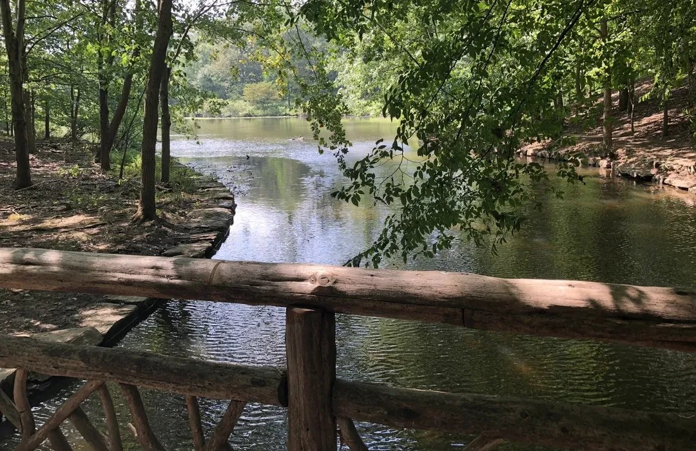

Home / Trail tips
Tips and rules
Winkler is small, planted and busy at weekends. Most of what follows is about keeping it that way.
The preserve asks for very little: stay on the blazes, take your rubbish home, and leave the dog and the bike at home too. The rest is what we have learned walking it.
The rules, and why they exist
No pets, including on a leadThe preserve is a planted habitat on 44 acres inside a city. Dogs disturb ground-nesting birds and carry seed into beds that took years to establish.
No bicycles on the trailsThe tread is narrow, soft and often wet. Tyres cut it into channels that then move water the wrong way.
Stay on the marked loopsGreen, Red, Yellow and White are blazed the whole way round. Cutting between them compacts roots and starts the desire lines that turn into erosion.
No swimming or wadingThe pond and its streams are habitat and the banks are soft. Look from the benches instead.
Do not pick or dig anythingAlmost everything growing here was chosen and planted. Take photographs, leave the plants.
Pack out everything you bring inThere is little to no bin provision. If you carried it in full, you can carry it out empty.
Before you set out
Come early at weekendsThe lot at the entrance is small and fills by mid-morning on a fine day.
Check the light, not just the weatherDawn and the hour before dusk are when the pond is stillest and the birds loudest.
Expect a natural surfaceRoots, steps and short climbs. Trainers are fine in dry weather; after rain you will want grip.
Do not rely on a phone as your only mapSignal dips under the canopy. The loops are colour-blazed — read the blazes.
Bring waterThere is no drinking water on the trails.
Leave time at the lodgeCatherine's Lodge is the orientation point and worth ten minutes before you walk.
While you are walking
Give way going uphillShort climbs, narrow tread. Whoever is working harder has right of way.
Keep your voice down near the waterHerons and turtles leave long before you see them if you arrive loudly.
Do not feed anythingDucks, turtles and squirrels all do better without bread.
Watch children at the bridgesThe footbridges have no high rails and the boards are slick after rain.
Report a problem you findA washed-out step or a blocked path is worth telling us about through the contact form.
Do not move the blazes or markersThey are the only navigation the preserve has.
Rules are set by the preserve, not by us. If anything here conflicts with a sign on site, the sign is right — and please tell us through the contact form.